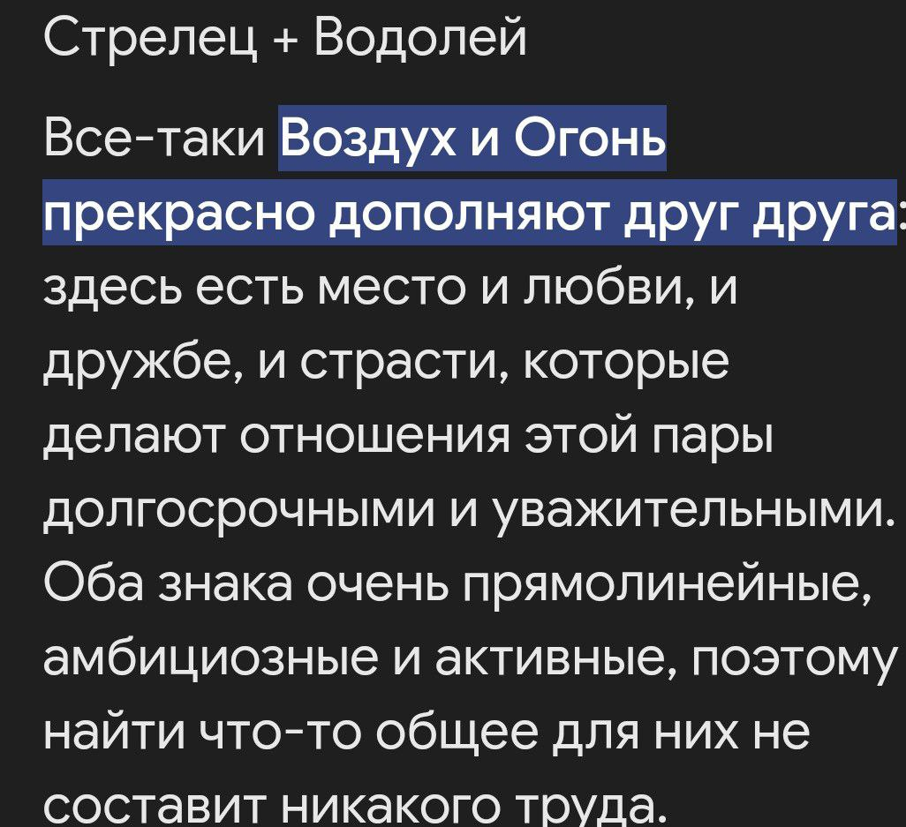

Потому что она всегда рядом, когда нужна поддержка.
Она всегда готова выслушать и понять.
Её улыбка может осветить самый мрачный день.
И даже когда всё идёт не так, она находит способ сделать лучше.
Люба, с Днём Рождения! Ты действительно самая лучшая!
 напиши html код про то какая совместимость у стрельца и водолея h1 { color: #333; text-align: center; font-size: 36px; transform: perspective(500px) rotateX(-30deg); text-shadow: 0 1px 0 #ccc, 0 2px 0 #c9c9c9, 0 3px 0 #bbb, 0 4px 0 #b9b9b9, 0 5px 0 #aaa, 0 6px 1px rgba(0,0,0,.1), 0 0 5px rgba(0,0,0,.1), 0 1px 3px rgba(0,0,0,.3), 0 3px 5px rgba(0,0,0,.2), 0 5px 10px rgba(0,0,0,.25), 0 10px 10px rgba(0,0,0,.2), 0 20px 20px rgba(0,0,0,.15); } p { line-height: 1.6; margin-bottom: 15px; } .compatibility { border: 1px solid #ccc; padding: 20px; background-color: #fff; box-shadow: 0 2px 5px rgba(0, 0, 0, 0.1); max-width: 600px; margin: auto; }Стрелец и Водолей – два знака зодиака, которым свойственен дух свободы и независимости. Они оба ценят приключения, новые идеи и открытость к миру. В отношениях между ними царит атмосфера легкости и взаимного уважения.
В целом, отношения между Стрельцом и Водолеем полны радости, приключений и новых впечатлений. Если они смогут преодолеть свои недостатки и научиться лучше понимать друг друга, их союз будет крепким и счастливым.
Кошки – одни из самых популярных домашних животных в мире. Они известны своей грацией, мягкостью и независимым характером. Кошечки могут быть отличными компаньонами, но при этом они любят свою свободу и часто делают все по-своему.
Эти милые создания обладают удивительной способностью успокаивать своих хозяев. Их мурлыканье может снизить уровень стресса и улучшить настроение. Кроме того, кошки очень чистоплотны и проводят много времени за уходом за собой.
Существует множество пород кошек, каждая из которых имеет свои уникальные черты. Например, сиамские кошки известны своим громким голосом и преданностью хозяину, а британские короткошерстные славятся своей спокойной натурой и дружелюбием.
Если у вас есть кошка, важно помнить о правильном уходе за ней. Регулярное питание, игра и внимание – ключевые факторы для поддержания здоровья и счастья вашего питомца.
В общем, кошечки – это замечательные существа, которые приносят радость и уют в дом. Их ласка и привязанность делают их незаменимыми членами семьи.